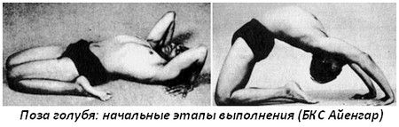

Капота — это «голубь» на Санскрите. Название позе дано, видимо, в связи с тем, что в
конечном положении грудь расширяется и выпячивается, чем напоминает напыжившегося
голубя.
Поза голубя: техника выполнения
Примите позу героя, сев на коврик для йоги, либо на сложенное одеяло.Затем примите позу Супта Вирасана, вытяните руки за голову, согните локти, и положите ладони на пол, рядом с ушами, пальцы направлены к плечам.Перенесите вес тела на ладони и сделайте выдох.Вытяните руки, и поднимите туловище от колен, при этом вытягивая бедра. Затем соедините колени.

Напрягите ягодицы, вытяните позвоночник, согните локти и захватите пальцы ног руками.
Положите локти на пол. Поскольку диафрагма будет сжата, то дыхание участится.
капотасанаСделайте несколько быстрых вдохов-выдохов, и приподнимите область таза, напрягая бедра.
Сохраняя это положение, постарайтесь придвинуть ладони к пяткам, и схватиться за них, тем самым приблизив голову к стопам и поставив темя на подошвы.
поза голубяЭто конечное положение. Поначалу оставайтесь в нем в течение нескольких секунд, постепенно увеличивая время удержания позы до 1 минуты.
Выход из позы: на выдохе освободите захват стоп, опустите голову и туловище, пока не окажитесь в Супта Вирасане; по очереди выпрямите ноги и расслабьтесь.
Капотасана: польза
Поза растягивает всю переднюю часть тела, лодыжки, бедра, промежность, живот, грудь и горло.
Растягиваются глубокие сгибатели бедра.
Укрепляются мышцы спины.
Улучшается осанка.
Стимулируются органы брюшной полости и шея.
Улучшается работа репродуктивных органов.
Подъем диафрагмы мягко массирует сердце, укрепляя его.
Поза голубя в йоге: противопоказания
-Высокое или низкое кровяное давление
-Мигрени
-Бессонница
-Травмы шеи или нижнего отдела позвоночника